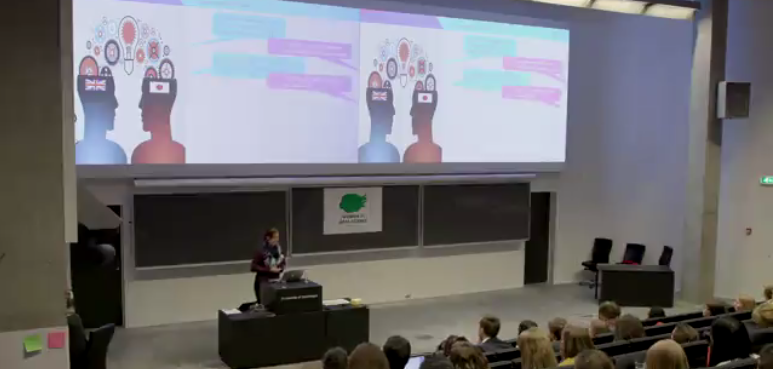
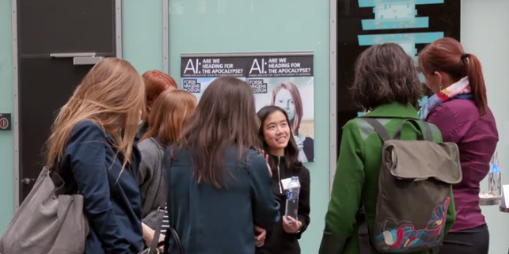
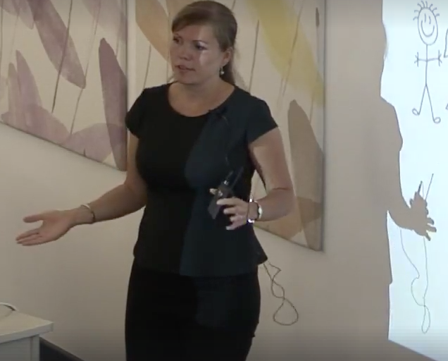
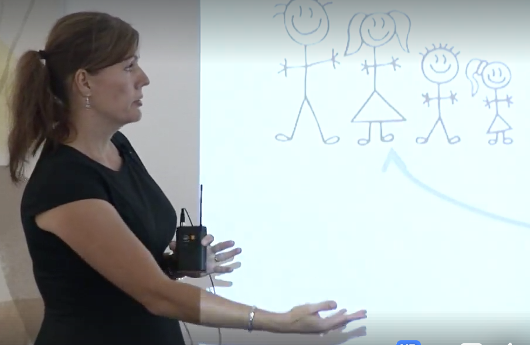
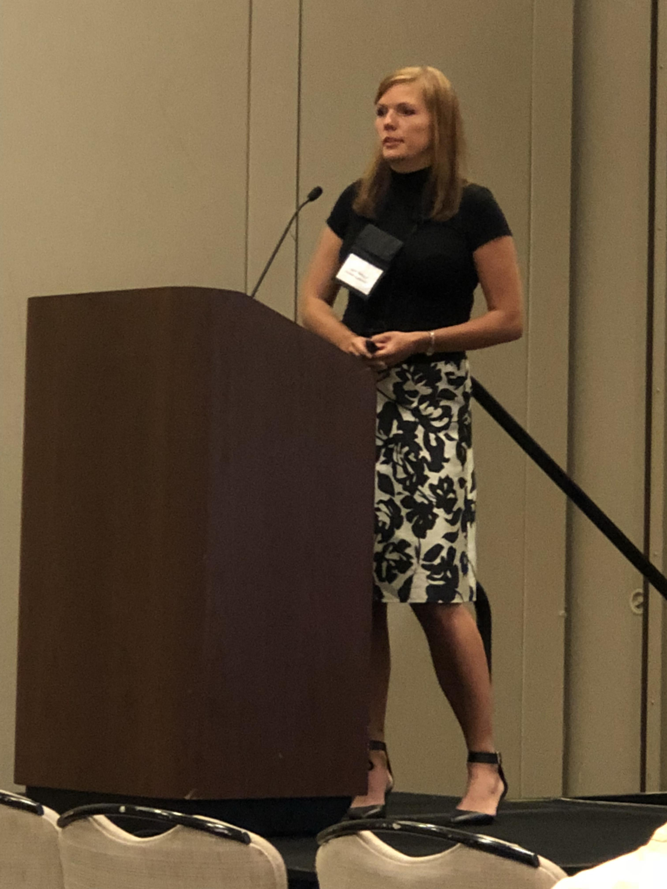
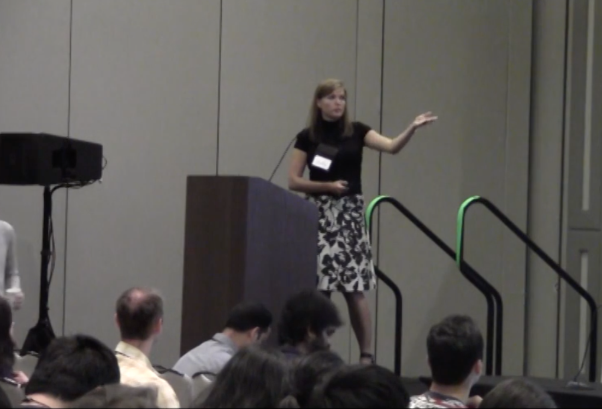
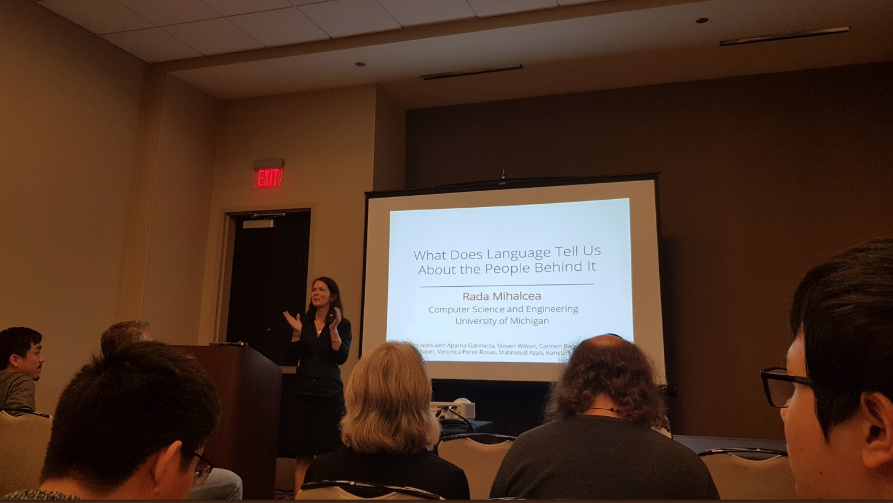
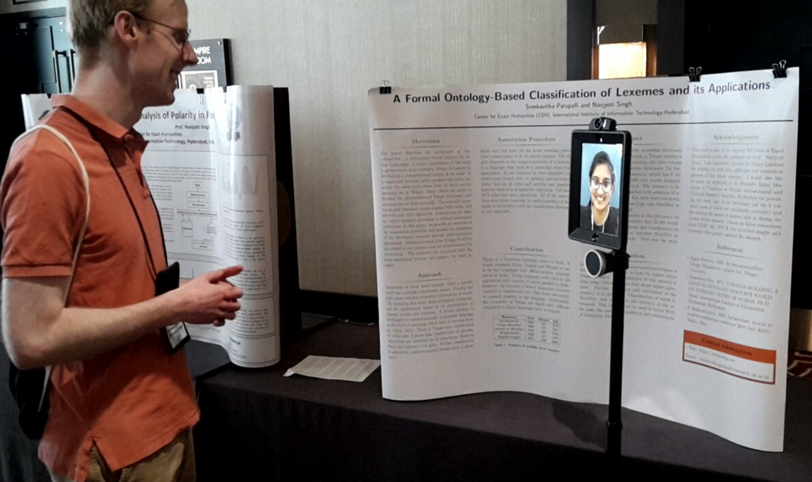
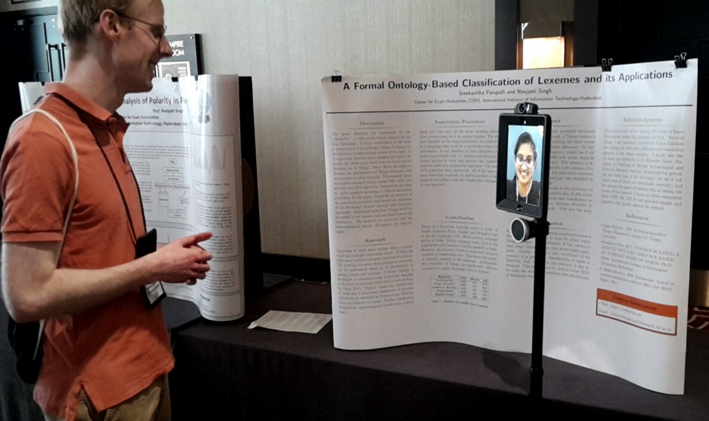

News / current activities
Mar 2021Our paper on hyperbolic GNNs for user representation accepted to NAACL 2021 - see you in virtual Mexico!
Mar 2021 Tenured! The group is moving to the University of Marburg, stay tuned!
Feb 2021 Member of the Program Committees of EACL 2021, ACL 2021, ECML/PKDD 2021, IJCAI 2021...
Feb 2021 Invited speaker at the Text, Speech and Dialog Conference (TSD 2021)
Jan 2021Paper on neural modeling of user emotional phases over time accepted to EACL 2021.
“PHASE: Learning Emotional Phase-aware Representations for Suicide Ideation Detection on Social Media” together with Ramit Sawhney, Harshit Joshi, and Rajiv Ratn Shah.
Dec 2020 Invited talk (on user representation learning) in the University of Sheffield's NLP Seminar Series
Dec 2020 Area Chair for the NAACL 2021 Computational Social Science track
Oct 2020Our research group Conversational AI and Social Analytics (CAISA) has started!
We are temporarily hosted by the Computer Science Department of TU Darmstadt.
July 2020 Awarded BMBF AI funding to start a research group on Dynamically Social NLP for Online Discourse Analysis at TU Darmstadt. Looking forward, and hiring!
May 2020 Area Chair for the EMNLP 2020 Computational Social Science track
Apr 2020 Paper accepted to ACL 2020. Excited to discuss more about contextually personalized classification models soon!
Mar 2020 Started a professorship in Mainz. Excited about a range of new NLP/AI/ML/CSS research projects and lectures!
Feb 2020 Our proposal paper from Dagstuhl is on ArXiv: K. Balog, L. Flekova, M. Hagen, R. Jones, M. Potthast, F. Radlinski, M. Sanderson, S. Vakulenko & H. Zamani: Common Conversational Community Prototype: Scholarly Conversational Assistant.
Nov 2019 Member of the Program Committee of ACL 2020
Nov 2019 Member of the Scientific Committee of LREC 2020
Nov 2019 Looking forward to contributing to the Dagstuhl seminar on Conversational Search
Jul 2019 Invited talk at the L3S Research Center at Leibniz University Hannover
Jun 2019 Member of the Program Committee of EMNLP 2019 for the Social Media and Computational Social Science track
Apr 2019 Invited talk at the Computational Social Sciences group at RWTH
Apr 2019 Speaking about cross-lingual transfer learning on Alexa at the Women in Data Science conference


Jan 2019 Member of the Program Committee of the 4th Workshop on Representation Learning for NLP at ACL 2019
Jan 2019 Member of the Program Committee of Narrative Understanding workshop at NAACL 2019
Jan 2019 Member of the Program Committee of Gender Bias in NLP workshop at ACL 2019
Dec 2018 Member of the Program Committee of NAACL-HLT 2019 for Bias/Fairness/Ethics track
Dec 2018 Our paper Impact of Actively Open-minded Thinking on Social Media Communication" with UPenn Positive Psychology Center is published in the Judgement and Decision Making journal! Actively Open-Minded Thinking associated with benefits both in responding to and at creating social media content.
Nov 2018 Presenting our UCL paper Changes in Psycholinguistic Attributes of Social Media Users Before, During, and After Self-Reported Influenza Symptoms" at EMNLP 2018 SMM4H Workshop in Brussels, Belgium.
Sep 2018 Member of the Program Committee of AAAI 2019. Taking place in Honolulu this year, the conference received 7745 submissions, twice as many as AAAI 2018. Will be fun reviewing.
Jul 2018 Invited talk "Stylistic variation: Applications, limitations and risks" at the Knowledge Media Institute in Milton Keynes, UK.


Jun 2018 Presenting our Alexa paper Selecting Machine-Translated Data for Quick Bootstrapping of a Natural Language Understanding System at NAACL 2018 in New Orleans, USA.


Jun 2018 Main organizer of the 2nd Workshop on Stylistic Variation at NAACL 2018 in New Orleans. Enabling a discussion of shared issues across the many instantiations of stylistic difference across research fields. Featuring fascinating speakers such as Prof. Jamie Pennebaker, Prof. Rada Mihalcea or Prof. Barbara Plank. Pass by!

May 2018 Member of the Program Committee of the 3rd Workshop on Representation Learning for NLP
May 2018 Time for a bit of work-life balance! Completed the 800 km Camino de Santiago in 23 days, on a mindblowing spiritual journey.
Apr 2018 Our book chapter Content-based Analysis and Visualization of Story Complexity with UKP Lab in Darmstadt and University of Konstanz has been published in
Visualisierung sprachlicher Daten
Apr 2018 Organized a workshop on bootstrapping machine learning systems for new languages and domains at the Amazon Machine Learning Conference in Seattle. The conference attracted thousands of tech employees, with three digit participation in the workshop.
Mar 2018 Member of the Program Committee of ACL 2018.
Dec 2017 Member of the Program Committee of NAACL-HLT 2018
Nov 2017 Member of the Program Committee of NIPS 2017 Learning from Limited Data workshop.
Oct 2017 Honored to be selected to the Organization Board of the Widening NLP diversity event at NAACL 2018 in New Orleans. We are looking for travel grant sponsors and student mentors! Get in touch if you are interested! Read more at the Alexa blog
 

Sep 2017 Opened a 'Deep Learning for NLP' evening class at the Amazon Machine Learning University for tech employees.
Jul 2017 Presenting our poster "Annotator Traits Impact Crowdsourced Assessment of other Users" at the International Conference on Computational Social Science (IC2S2) in Cologne, Germany. Looking forward to catching up with the Computational Social Sciences community!
(Older news are archived)
2020
L. Flek: Returning the N to NLP: Towards Contextually Personalized Classification Models ACL 2020 (to appear).
K. Balog, L. Flekova, M. Hagen, R. Jones, M. Potthast, F. Radlinski, M. Sanderson, S. Vakulenko & H. Zamani:
Common Conversational Community Prototype: Scholarly Conversational Assistant. arXiv preprint arXiv:2001.06910.
2018
J. Carpenter, D. Preotiuc-Pietro, L. Flekova, J. Clark, L. Smith, M. L. Kern, A. Buffone, L. Ungar, M. Seligman:
The impact of actively open-minded thinking on social media communication, Judgment and Decision Making.
Vol. 13/6, p. 562-574, November 2018
L. Flekova, V. Lampos, I. J. Cox: Changes in psycholinguistic attributes of social media users before, during, and
after self-reported influenza symptoms, Proceedings of the 3rd Social Media Mining for Health Applications
Workshop, p. 17-21, Association for Computational Linguistics, 2018.
J. Brooke, L. Flekova, M. Koppel, T. Solorio : Proceedings of the Second Workshop on Stylistic Variation, ISBN 978-
1-948087-24-7, Association for Computational Linguistics, 2018.
L. Flekova, F. Stoffel, I. Gurevych, D. A. Keim: Content-based Analysis and Visualization of Story Complexity, . In:
N. Bubenhofer (Ed.): Visual Linguistics. Heidelberg University Publishing, p. 185--223, DOI: 10.17885/heiup.345.474 , 2018.
X. S. Vu, L. Flekova, L. Jiang, I. Gurevych: Lexical-semantic resources: yet powerful resources for automatic personality classification, Proceedings of the 9th Global WordNet Conference (GWC 2018), p 173–182, Singapore,
ISBN 978-981-11-7087-4, January 2018.
2017
L. Flekova, M. Schott: Fast Precision Reconstruction of Micropattern Detector Signals via Convolutional Neural Networks.
Journal of Physics: Conference Series, Vol. 898, No. 3, p. 032054. IOP Publishing. 2017
L. Flekova: Leveraging Lexical-Semantic Knowledge for Text Classification Tasks, PhD Thesis, 2017, Technische Universität Darmstadt
J. Carpenter, D. Preotiuc-Pietro, L. Flekova, S. Giorgi, C. Hagan, M. L. Kern, A. Buffone, L. Ungar, M. Seligman: Real men don’t say “cute”: Using automatic language analysis to isolate inaccurate aspects of stereotypes.
Social Psychological and Personality Science, SPPS. Vol. 8/3, p. 310-322, April 2017
2016
L. Flekova, I. Gurevych: Supersense Embeddings: A Unified Model for Supersense Interpretation, Prediction and
Utilization In: Proceedings of the 54th Annual Meeting of the Association for Computational Linguistics (ACL), vol.1,
2016, p. 2029-2041
L. Flekova, D. P. Pietro, L. Ungar: Exploring Stylistic Variation with Age and Income on Twitter. In: Proceedings of
the 54th Annual Meeting of the Association for Computational Linguistics (ACL), vol.2, 2016, p.313-319
L. Flekova, S. Giorgi, J. Carpenter, D. P. Pietro, L. Ungar: Analyzing Biases in Human Perception of User Age and
Gender from Text. In: Proceedings of the 54th Annual Meeting of the Association for Computational Linguistics
(ACL), vol.1, 2016, p. 843-854
P. Lerner, A. Csanadi, J.Daxenberger, L. Flekova, C. Ghanem, I. Kollar, F. Fischer and I. Gurevych: A User
Interface for the Exploration of Manually and Automatically Coded Scientific Reasoning and Argumentation. In:
Proceedings of the 12th International Conference of the Learning Sciences, 2016
2015
L. Flekova, T. Sousa, M. Mieskes, I.Gurevych. Document-level School Lesson Quality Classification Based on
German Transcripts. Journal for Language Technology and Computational Linguistics, vol. 30, no. 1, p. 99-124,
ISSN 2190-6858. 2015
F. Stoffel, L. Flekova, D. Oelke, I. Gurevych, and D. A. Keim: Feature-Based Visual Exploration of Text
Classification. In: Proceedings of the Symposium on Visualization in Data Science (VDS) at IEEE VIS 2015
L. Flekova, S. Giorgi, J. Carpenter, D. P. Pietro, L. Ungar: Analyzing Crowdsourced Assessment of User Traits
through Twitter Posts In: Proceedings of the Third AAAI Conference on Human Computation and Crowdsourcing.
HCOMP, November 2015
L. Flekova, E. Ruppert, D. P. Pietro: Analysing Domain Suitability of a Sentiment Lexicon by Identifying
Distributionally Bipolar Words In: Association for Computational Linguistics: Proceedings of the 6th Workshop on
Computational Approaches to Subjectivity, Sentiment and Social Media Analysis, p. 77-84, Association for
Computational Linguistics, 2015.
L. Flekova, I. Gurevych: Personality Profiling of Fictional Characters using Sense-Level Links between Lexical
Resources. In: Proceedings of the 2015 Conference on Empirical Methods in Natural Language Processing
(EMNLP), p. 1805-1816, Association for Computational Linguistics, 2015.
T. Sousa, L. Flekova, M. Mieskes, I.Gurevych: Constructive Feedback, Thinking Process and Cooperation:
Assessing the Quality of Classroom Interaction In: Interspeech 2015 - Towards a better understanding of the most
important biosignal, Dresden, Sep. 2015
R. Ballou, G. Deferne, M. Finger Jr, M. Finger, L. Flekova, J. Hosek, S. Kunc, K. Macuchova, K.A. Meissner, P. Pugnat:
New exclusion limits on scalar and pseudoscalar axionlike particles from light shining through a wall.
Physical Review D, vol. 92 (9), p. 092002-1 – 6, American Physical Society, 2015
2014 and earlier
L. Flekova, O. Ferschke, I. Gurevych: What Makes a Good Biography? Multidimensional Quality Analysis Based on
Wikipedia Article Feedback Data. In: Proceedings of the 23rd International World Wide Web Conference (WWW
2014), p. 855-866, International World Wide Web Conferences Steering Committee, April 2014.
L. Flekova, O. Ferschke, I. Gurevych: UKPDIPF: A Lexical Semantic Approach to Sentiment Polarity Prediction on
Twitter Data. In: Preslav Nakov and Torsten Zesch: SemEval-2014 Task 9: Sentiment Analysis in Twitter,
Proceedings of the 8th International Workshop on Semantic Evaluation, p.704-710, Dublin City University, 2014
L. Flekova, I. Gurevych: Can We Hide in the Web? Large Scale Simultaneous Age and Gender Author Profiling in Social Media,
CLEF 2013 Labs and Workshop Papers, 2013.
P. Pugnat, R. Ballou, M. Schott, T. Husek, M. Sulc, G. Deferne, L. Duvillaret, M. Finger, L. Flekova, J. Hosek:
Search for weakly interacting sub-eV particles with the OSQAR laser-based experiment: results and perspectives,
The European Physics Journal C, Vol. 74 (8), Springer, 2014, ISSN 1434-6044. p 1-7.
M. Sulc, P. Pugnat, R. Ballou, M. Schott, T. Husek, G. Deferne, L. Duvillaret, M. Finger, L. Flekova, J. Hosek, T. Husek:
Axion search by laser-based experiment OSQAR. Nuclear Instruments and Methods in Physics
Research Sec. A: Accelerators, Spectrometers, Detectors and Associated Equipment, 718, p. 530-532, 2013
M. Schott, P. Pugnat, R. Ballou, G. Deferne, L. Duvillaret, M. Finger, L. Flekova, J. Hosek, T. Husek, R. Jost:
First Results of the Full-Scale OSQAR Photon Regeneration Experiment,arXiv preprint arXiv:1110.0774, 2011.
L. Flekova, V. Jary, T. Liska: Mass Data Processing Optimization on High Energy Physics Experiments,
International Conference on Advanced Computer Theory and Engineering, 4th (ICACTE 2011),2011, ASME Press.
My research interests lie in machine learning applications in the field of Natural Language Processing (NLP), with a core expertise in the area of user modeling and stylistic variation. I have been investigating how various individuals and sociodemographic groups differ in their language usage, and how this variation can be in return used in machine learning tasks to predict in-group behavior of interest.
This also led me to a broader interest in the bias that the NLP field is subject to, in stereotype exaggeration, ethics issues, performance of machine learning models on underrepresented groups, and subsequently domain adaptation of the machine learning models.
My PhD was focused on lexical semantics - examining to which extent word ambiguity and context plays a role in document classification tasks. When is the provided context sufficient for the task at hand, following distributional hypothesis, and when does explicit word sense disambiguation, concept graphs or semantic ontologies become beneficial? Do these findings hold with the rise of deep learning architectures? Does explicitly supplied lexical semantic information still improve classification tasks in scenarios with limited training data?
I have been further pursuing the limited training data paradigm in industry, leading projects related to multilingual and multitask learning, as well as various other bootstrapping efforts for limited in-domain labeled data.
I am a big fan of cross-disciplinary collaborations, publishing together with educational researchers, psychologists, sociologists, physicists, and visual analysts, among others.
Career history
2021 - present Associate Professor for Language Technologies (tenured), University of Marburg
2020 - 2021 Associate Professor for AI, Mainz University of Applied Sciences
2017 - 2020 Research & Development Program Manager at Amazon Alexa AI
2017 Research Fellow at the University College London (UCL), Department of Computer Science
2015 Visiting Researcher at the University of Pennsylvania, USA
2012 - 2016 Doctoral Researcher at Ubiquitous Knowledge Processing Lab, Technische Universität Darmstadt. Thesis: Leveraging Lexical-Semantic Knowledge for Text Classification Tasks
2011 - 2012 Digital Commerce Strategist at Google EMEA Headquarters, Dublin, Ireland
2013 Master of Economics (Ing.) from the University of Economics in Prague. Thesis: Legal aspects of international e-commerce on web search.
2011 Master of Science (Ing.) from the Czech Technical University in Prague. Thesis: Big data processing optimization in high energy physics.
2010 - 2011 Technical Fellow at the European Center for Nuclear Research (CERN)
2008 Summer Student at the European Center for Nuclear Research (CERN)
2007 - 2008 Exchange studies of Business Informatics at the University of Applied Sciences in Oulu, Finland